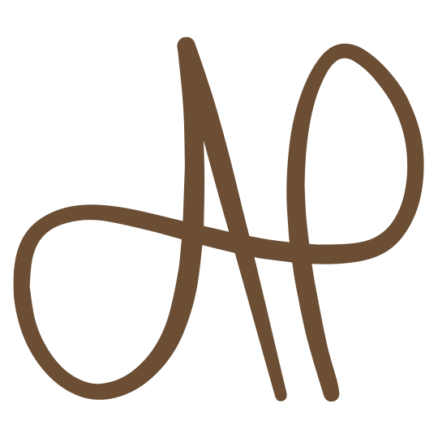

1Arianna Postinghel
2Arianna Postinghel
3Massaggiatrice
per il tuo benessere
4Offro massaggi personalizzati che promuovono il benessere fisico e mentale, garantendo un'esperienza unica in un ambiente sicuro e accogliente.
 5Prenota un massaggio
5Prenota un massaggio